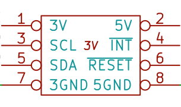
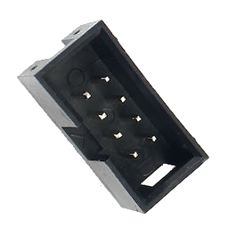

Standard Connector for I2C
April 2018
 
There are a number of connector formats out there for I2C in hobby projects. Every one I've seen are 4 pin consisting of ground, power, SCL, and SDA. No reset. No interrupt. My projects are rarely just for play - they are all building something to use to solve a problem. As such, I expect robustness from my designs. In the case of I2C this means I need to be able to reset devices on the bus and to receive interrupts.
Those other connector formats also tend to use connectors that are a pain to make. No doubt part of that is to get people to buy their cables. I'm willing to give up space efficiency in order to gain the ability to easily make my cables. I've settled on the old school keyed IDC connector with 0.1" pin spacing. Making cables of any length using 8 wire ribbon cable, including a "bus" with multiple connectors, is trivial.
The pins are shown above. I chose to make my "standard" be that SCL, SDA, ~RESET, and ~INTERRUPT are based on 3.3V. 5V and 5GND are only on the connector in case some device needs more than 3.3V or requires more current than is usual. (5GND is not necessarily connected to 3GND.) This allows simple setups to use 3.3V provided by low current sources that typically come out of CPU modules via their internal regulator. 5V can come from an auxillary source, possibly the same one powering the CPU module. 5V devices must convert their signals to 3.3V.
Pull-up resistors for ~RESET should be at the slave. Pull-up resistor for ~INTERRUPT should be at the master. Pull-up resistors for SCL/SDA should be at the master.
I generally use 10K for ~RESET and ~INTERRUPT pull-ups and 4.7K for SCL/SDA as a compromise.